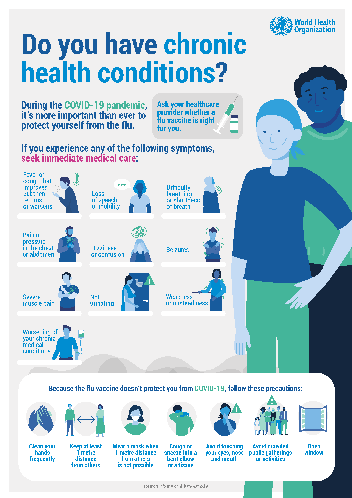

Latest Health Advisory from WHO

What to do to keep yourself and others safe from COVID-19
- Maintain at least a 1-metre distance between yourself and others to reduce your risk of infection when they cough, sneeze or speak. Maintain an even greater distance between yourself and others when indoors. The further away, the better.
- Make wearing a mask a normal part of being around other people. The appropriate use, storage and cleaning or disposal are essential to make masks as effective as possible.
Here are the basics of how to wear a mask:
- Clean your hands before you put your mask on, as well as before and after you take it off, and after you touch it at any time.
- Make sure it covers both your nose, mouth and chin.
- When you take off a mask, store it in a clean plastic bag, and every day either wash it if it’s a fabric mask, or dispose of a medical mask in a trash bin.
- Don’t use masks with valves.
How to make your environment safer
- Avoid the 3Cs: spaces that are closed, crowded or involve close contact.
- Outbreaks have been reported in restaurants, choir practices, fitness classes, nightclubs, offices and places of worship where people have gathered, often in crowded indoor settings where they talk loudly, shout, breathe heavily or sing.
- The risks of getting COVID-19 are higher in crowded and inadequately ventilated spaces where infected people spend long periods of time together in close proximity. These environments are where the virus appears to spread by respiratory droplets or aerosols more efficiently, so taking precautions is even more important.
- Meet people outside. Outdoor gatherings are safer than indoor ones, particularly if indoor spaces are small and without outdoor air coming in.
- Avoid crowded or indoor settings but if you can’t, then take precautions:
- Open a window. Increase the amount of ‘natural ventilation’ when indoors.
- Wear a mask (see above for more details).